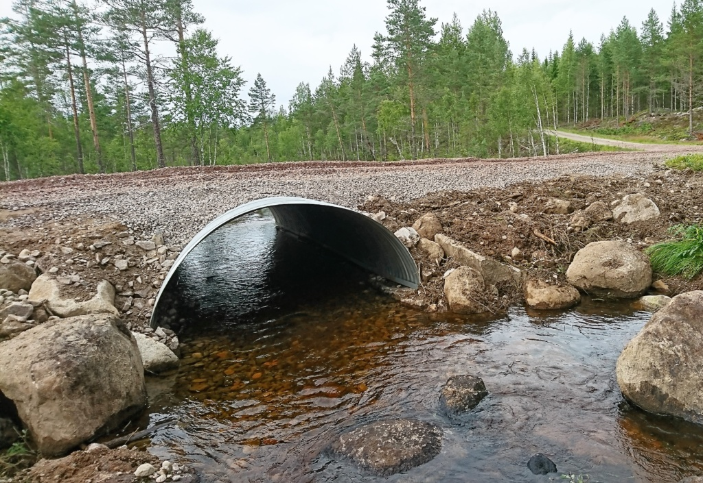

Valvbågar i korrugerat stål bevarar vattendragets naturliga botten – från små bäckar till fullstora faunapassager över motorväg.
Tillverkade i Sverige av varmförzinkat stål.
Bågen står på fundament vid sidorna av vattendraget – botten lämnas orörd och fisk och fauna passerar fritt.
Större bågar levereras i plåtsektioner som bultas ihop på plats – enkel transport även för stora spann.
Valvbågar med spännvidd 1000–3600 mm levereras färdiga i ett stycke, klara att lyfta på plats. Höjden är halva spännvidden och måtten nedan är innermått.
De flesta valvbågar beställs med spännvidd 1000 eller 1200 mm – och däröver i jämna steg om 200 mm. I tabellen är dessa märkta med ●, och de vanligaste valen av godstjocklek och korrugering är gulmarkerade.
Allt tillverkas på beställning – mellanliggande spännvidder och andra godstjocklekar går lika bra. Behöver du större spann eller lägre bygghöjd? Se bultade valvbågar nedan.
| Spännviddmm | Höjdmm | Aream² | Korr.mm | Godsmm | ~Viktkg/m |
|---|---|---|---|---|---|
| 1000 (vanlig standarddimension) | 500 | 0,40 | 68×13125×26 (vanligast) | 1,52,0 (vanligast)2,5 | ~23~30~38 |
| 1100 | 550 | 0,47 | 68×13125×26 (vanligast) | 1,52,0 (vanligast)2,5 | ~25~33~42 |
| 1200 (vanlig standarddimension) | 600 | 0,56 | 68×13125×26 (vanligast) | 1,52,0 (vanligast)2,5 | ~27~36~45 |
| 1300 | 650 | 0,67 | 68×13125×26 (vanligast) | 1,52,0 (vanligast)2,53,03,5 | ~30~39~49~59~69 |
| 1400 (vanlig standarddimension) | 700 | 0,77 | 68×13125×26 (vanligast) | 1,52,02,5 (vanligast)3,03,5 | ~32~42~53~63~74 |
| 1500 | 750 | 0,89 | 68×13125×26 (vanligast) | 1,52,02,5 (vanligast)3,03,5 | ~34~45~57~68~79 |
| 1600 (vanlig standarddimension) | 800 | 1,00 | 125×26 | 2,02,53,0 (vanligast) | ~48~60~72 |
| 1700 | 850 | 1,14 | 125×26 | 2,02,53,0 (vanligast) | ~51~64~77 |
| 1800 (vanlig standarddimension) | 900 | 1,27 | 125×26 | 2,02,53,0 (vanligast)3,5 | ~54~68~81~95 |
| 1900 | 950 | 1,42 | 125×26 | 2,02,53,0 (vanligast)3,5 | ~57~72~86~100 |
| 2000 (vanlig standarddimension) | 1000 | 1,57 | 125×26 | 2,02,53,0 (vanligast)3,5 | ~60~75~90~105 |
| 2100 | 1050 | 1,73 | 125×26 | 2,53,0 (vanligast)3,5 | ~79~95~111 |
| 2200 (vanlig standarddimension) | 1100 | 1,90 | 125×26 | 2,53,0 (vanligast)3,5 | ~83~99~116 |
| 2300 | 1150 | 2,08 | 125×26 | 2,53,0 (vanligast)3,5 | ~87~104~121 |
| 2400 (vanlig standarddimension) | 1200 | 2,26 | 125×26 | 2,53,0 (vanligast)3,5 | ~90~108~126 |
| 2500 | 1250 | 2,46 | 125×26 | 2,53,0 (vanligast)3,5 | ~94~113~132 |
| 2600 (vanlig standarddimension) | 1300 | 2,65 | 125×26 | 2,53,0 (vanligast)3,5 | ~98~117~137 |
| 2700 | 1350 | 2,87 | 125×26 | 2,53,0 (vanligast)3,5 | ~102~122~142 |
| 2800 (vanlig standarddimension) | 1400 | 3,08 | 125×26 | 2,53,0 (vanligast)3,5 | ~105~126~148 |
| 2900 | 1450 | 3,31 | 125×26 | 2,53,0 (vanligast)3,5 | ~109~131~153 |
| 3000 (vanlig standarddimension) | 1500 | 3,54 | 125×26 | 2,53,0 (vanligast)3,5 | ~113~135~158 |
| 3100 | 1550 | 3,77 | 125×26 | 2,53,0 (vanligast)3,5 | ~117~140~163 |
| 3200 (vanlig standarddimension) | 1600 | 4,02 | 125×26 | 2,53,0 (vanligast)3,5 | ~120~144~169 |
| 3300 | 1650 | 4,28 | 125×26 | 2,53,0 (vanligast)3,5 | ~124~149~174 |
| 3400 (vanlig standarddimension) | 1700 | 4,54 | 125×26 | 2,53,0 (vanligast)3,5 | ~128~153~179 |
| 3500 | 1750 | 4,81 | 125×26 | 2,53,0 (vanligast)3,5 | ~132~158~184 |
| 3600 (vanlig standarddimension) | 1800 | 5,09 | 125×26 | 2,53,0 (vanligast)3,5 | ~135~162~190 |
| Större spann? Bultade valvbågar byggs från 3 meter och uppåt – utan övre gräns → | |||||
● = vanlig standarddimension – mellanliggande mått tillverkas på beställning. Gulmarkerad godstjocklek och korrugering är de vanligaste för dimensionen; alla tjocklekar går att beställa. Höjd = halva spännvidden. Area = öppningens area (halvcirkel). ~Vikt = beräknad ungefärlig vikt per meter.
För spännvidder från cirka 3 meter byggs valvbågen i stället upp av korrugerade stålplåtar som bultas ihop på plats. Då är storleken i praktiken obegränsad – från vatten- och gångpassager till fullstora faunapassager över motorvägar.
Bultade valvbågar har ingen måttlista – varje båge beräknas och dimensioneras för sitt projekt utifrån spännvidd, bygghöjd, fyllnadshöjd och trafiklast.
Höjden är inte låst till halva spännvidden – bågen kan byggas lägre. Perfekt när bygghöjden är begränsad.
Från gårdsinfarter och skogsbilvägar till faunapassager över motorväg – plåtsektionerna gör transporten enkel även för de största bågarna.
| Spännviddexempel | Typisk användning |
|---|---|
| 3–5 m | Bäckar, gårdsinfarter och skogsbilvägar |
| 5–8 m | Större vattendrag samt gång- och cykelpassager |
| 8–12 m | Vägportar och viltpassager under väg |
| 12–20 m | Broar och större faunapassager |
| Över 20 m | Fullstora faunapassager över motorväg |
Spännvidderna är exempel – bultade valvbågar har ingen fast måttlista och ingen övre gräns. Höjden väljs fritt, från lågbyggd till normalprofil, och beräknas tillsammans med plåtprofil och godstjocklek för varje projekt utifrån bygghöjd, fyllnadshöjd och trafiklast.
Skicka spännvidd, önskad höjd och förutsättningarna på platsen så tar vi fram förslag och offert för din bultade valvbåge.
Valvbågen bevarar den naturliga botten och passar därför där rör blir ett hinder:
Våra valvbågar konstrueras av högkvalitativt, varmförzinkat korrugerat stål för maximal hållbarhet. Med extra zinkskikt eller Trenchcoat-beläggning nås livslängder på uppemot 100 år – se vår livslängdstabell.
Vid installation är miljöskydd en prioritet. Störningar i vattendragets botten minimeras och naturliga bottenstrukturer återskapas, exempelvis med block av olika storlekar för att efterlikna vattendragets naturliga form och underlätta fiskvandring. Erosionsskydd, till exempel med natursten, är en viktig komponent.
Valvbågen vilar på fundament vid sidorna av vattendraget och balanserar infrastrukturens behov med hänsyn till naturen.
Alla valvbågar görs på beställning. Skicka spännvidd, önskad höjd och hur det ser ut på platsen, så hjälps vi åt att ta fram rätt lösning, pris och leveranstid.